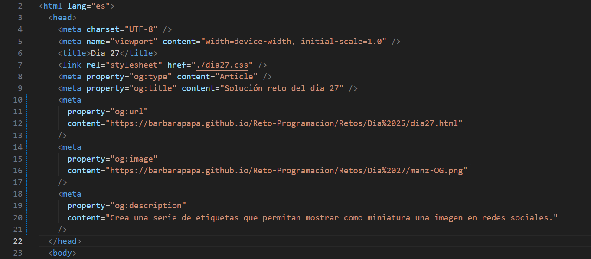

Podemos usar por ejemplo Open Graph de Meta, un protocolo que permite dotar de metadatos orientados a redes sociales. Al compartir un enlace de una página en Facebook, WhatsApp, Instagram (o alguna herramienta o red que soporte este protocolo) de forma automática, analizarán el código HTML en busca de metadatos para utilizarlos. Es importante recordar que la URL de la imagen de previsualización debe ser una ruta absoluta. Las URL relativas no serán procesadas correctamente.
